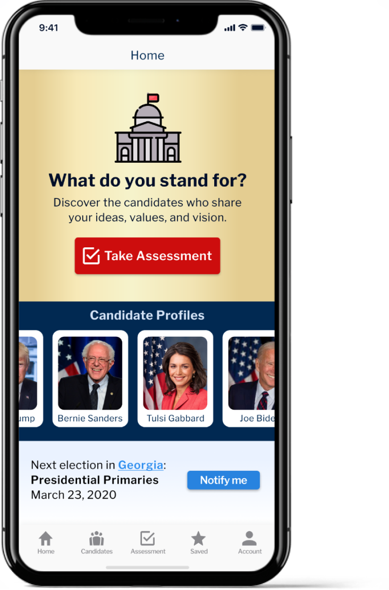
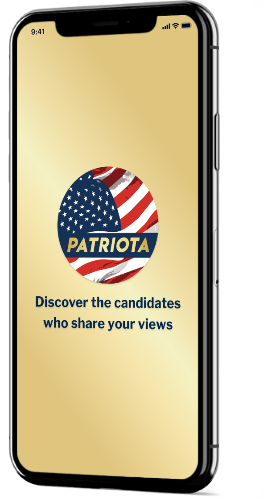
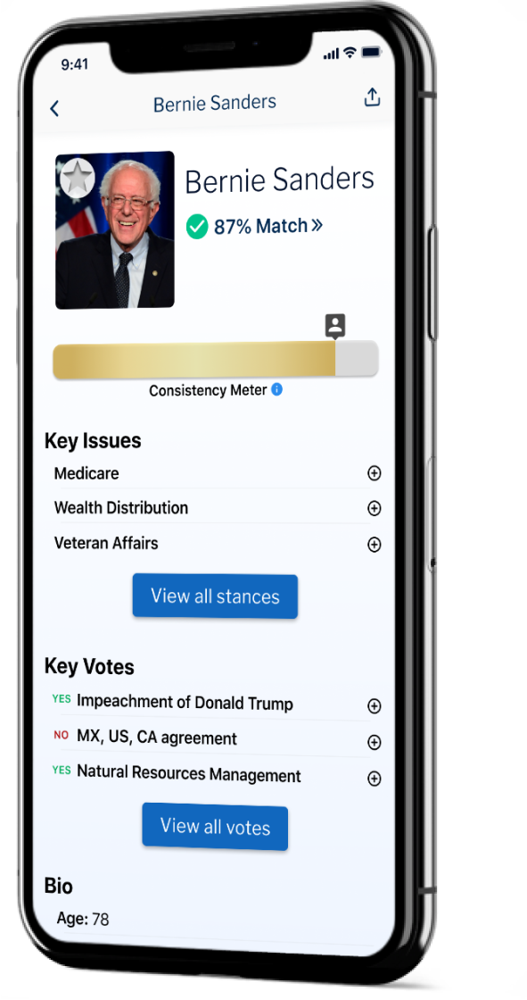

Citizens today feel disenchanted by extreme party affiliations and biased political news sources. We designed Patriota as a compass for US citizens to make their own decisions on how to vote, without the noise and fragmentation caused by party affiliations and the media.


